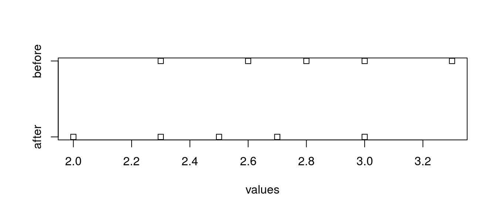

第2章 例題解答例
はじめに
本資料は『ソフトウェアメトリクス統計分析入門』(以降、テキストと記載)の第2章の例題をRで解いた際の解答例を示したものです。また、R Markdownを使うメリットを示すための一手段として作成していますので、テキストにおける計算方法とは異なる部分もあります。本資料で使用しているデータの入手に関してはテキストにてご確認下さい。
本資料がHTML形式の場合、Rのコードを参照するには右側にある[Code]ボタンをクリックして下さい。なお、JavaScriptは必ずOnにしてご覧下さい。
例題 2.1
ある組織にて改善活動を行い、改善前と後のそれぞれ5つのプロジェクトの欠陥密度のデータがあります。 改善の結果として、たしかに欠陥密度が下がって品質が向上し、効果があったといえるでしょうか。それとも、たまたまの結果と判断せざるをえないでしょうか。
データの設定
本例題で利用するデータは予めCSVファイルとして保存されているものとします。
データの変換
読み込んだデータは2変数のデータフレームになっていますので、以下のように1変数と因子のデータフレームに変換しておきます。
x.stacked <- stack(x)
colnames(x.stacked) <- c("values", "group")
df_print(x.stacked)| values | group |
|---|---|
| 2.6 | before |
| 3.0 | before |
| 2.8 | before |
| 2.3 | before |
| 3.3 | before |
| 2.7 | after |
| 2.5 | after |
| 2.3 | after |
| 2.0 | after |
| 3.0 | after |
検定
変換したデータを用いて、その分布を確認し等分散か否かをF検定var.test {stats}で確認します。
stripchart(values ~ group, data = x.stacked)
var.test(x$before, x$after, alternative = "two.sided")##
## F test to compare two variances
##
## data: x$before and x$after
## F = 1, num df = 4, denom df = 4, p-value = 1
## alternative hypothesis: true ratio of variances is not equal to 1
## 95 percent confidence interval:
## 0.1041175 9.6045299
## sample estimates:
## ratio of variances
## 1F検定の結果、帰無仮説（分散に差がない）は棄却されなかったので、2つのデータは等分散と見なしStudentのt検定を用います。
t.test(values ~ group, alternative = "less", var.equal = TRUE, data = x.stacked)##
## Two Sample t-test
##
## data: values by group
## t = -1.2457, df = 8, p-value = 0.1241
## alternative hypothesis: true difference in means is less than 0
## 95 percent confidence interval:
## -Inf 0.1478385
## sample estimates:
## mean in group after mean in group before
## 2.5 2.8Studentのt検定の結果、帰無仮説は棄却されなかったので改善前後のデータに有意差があるとは言えません。
例題 2.2
ある組織にて、昨年度までの欠陥密度の基準値が2.8だったとします。 基準値は過去のデータから異常値などを除いて算出した平均とします。そして、改善活動を行い、改善後の5 つのプロジェクトの欠陥密度のデータがあります。 改善の結果として、たしかに欠陥密度が下がって品質が向上し、効果があったといえるでしょうか。それとも、たまたまの結果と判断せざるをえないでしょうか。
データの設定
本例題で利用するデータの数は多くないので、直接、Rのコードで変数として設定します。
ref <- c(2.8) # 欠陥密度の基準値
dd <- c(2.8, 2.4, 2.2, 2.5, 2.6) # 改善後の欠陥密度検定
例題2.1と異なり固定的な基準値\((\mu_0 = 2.8)\)とデータの平均値の差の検定となりますので、1標本t検定の手法を用います。利用する関数は例題2.1と同じですが、引数の指定により1標本t検定が実施できます。t.test {stats}の詳細に関してはhelpを参照して下さい。
1標本t検定の対立仮説（帰無仮説）は基準値を\(\mu_0\)、比較する平均値を\(\mu\)とした場合、以下の3通りが考えられます。
- \(\mu \neq \mu_0\) （帰無仮説 \(\mu = \mu_0\)）
- \(\mu < \mu_0\) （帰無仮説 \(\mu \geq \mu_0\)）
- \(\mu > \mu_0\) （帰無仮説 \(\mu \leq \mu_0\)）
設問として「効果があったと言えるか？」なので、欠陥密度の平均値\(\mu\)が基準値\(\mu_0\)を下回るかどうか、すなわち、\(\mu < \mu_0\)（帰無仮説 \(\mu \geq \mu_0\)）となるかを検定します。
# 返り値をinline chunkで利用するために一度、変数に代入する
result.t.test <- t.test(dd, alternative = "less", mu = ref)
result.t.test##
## One Sample t-test
##
## data: dd
## t = -3, df = 4, p-value = 0.01997
## alternative hypothesis: true mean is less than 2.8
## 95 percent confidence interval:
## -Inf 2.713185
## sample estimates:
## mean of x
## 2.5検定の結果 \(p = 0.019971\)、\(95\%\)信頼区間は\((-\infty{}, 2.7131847)\)となり、帰無仮説は棄却されたので、改善活動は効果があったといえます。
t.test {stats}
Rcmdrでのt検定は少しややこしい感じがあるので、実際にt検定を行う関数t.test {stats}を整理してみました。
t検定の種類
t.test {stats}は一つの関数で複数のt検定に対応しており、R Commanderにおけるt検定との関係は以下のようになります。
| R Commander | 標本データ | R script |
|---|---|---|
| 1標本t検定 | 1標本と基準値 | t.test(x, mu = mu0) |
| 独立サンプルt検定 | 対応のない2標本 | t.test(x, y) |
| 対応のあるt検定 | 対応のある2標本 | t.test(x, y, paired = TRUE) |
1標本t検定
R Commanderにおける1標本t検定は、標本の母集団の平均値\((\mu)\)と基準値のような任意の値\((\mu_0)\)の差の検定を行います。
独立サンプルt検定（対応のないt検定）
R Commanderにおける独立サンプルt検定は、一般的には「対応のないt検定」または「独立したt検定」と呼ばれ対応関係のない2群間の平均値の差の検定を行います。
対応のないt検定は比較対象となる標本が等分散か否かによって計算方法が異なり、等分散を仮定できる場合はStudentのt検定、等分散が仮定できない場合はWelchのt検定を用います。計算式はこちら。
| 標本 | 関係 | 分散 | 指定方法 |
|---|---|---|---|
| 2群間の | 対応のない | 等分散 | t.test(x, y, var.equal = TRUE) |
| 2群間の | 対応のない | 不等分散 | t.test(x, y, var.equal = FALSE) |
今までは2群の分散が等しいかどうか不明のときは等分散性の検定（F検定）を行ってからStudentのt検定を用いるかWelchのt検定を用いるか決めるという方法が勧められていましたが、最近では等分散性の検定（F検定）は行なわずにWelchのt検定を用いるのがベストプラクティスと言われています。
等分散性の検定の必要性
等分散性の検定（F検定）の後にt検定を行う2段階検定は不適切との指摘があるように等分散性の検定（F検定）は行なわずに単にWelchのt検定だけで構わないとするのが現在の主流です。
同様の指摘は三重大学の奥村先生もt検定 - 分散が等しいかどうか不明の場合で行っており、要点を引用すると以下の通りです。
等分散の検定で p 値が十分小さければ「等分散でない」というのはいいのですが，p 値が十分小さくなければ「等分散である」というのは間違いで，「等分散かどうかかわからない」というのが統計的検定の基本です。「等分散かどうかかわからない」ときに「等分散である」を仮定した t 検定を行えば，正しい結果は得られません。
この指摘の内容は第3回の勉強会の資料P26-28で説明があったように「p値が十分に小さくない = 帰無仮説を棄却されない = 検定は失敗」であり「帰無仮説が正しい」とは断言できないと同じ指摘内容です。詳細はリンク先を参照して下さい。
今回の例題2.1では従来通り、等分散性の検定（F検定）結果にしたがいt検定の手法を決めましたが、最近の方法を用いるた場合、以下となり、得られた結論は同じとなりました。
# `var.equal = FALSE`の設定は省略可能
t.test(values ~ group, alternative = "less", var.eqaul = FALSE, data = x.stacked)##
## Welch Two Sample t-test
##
## data: values by group
## t = -1.2457, df = 8, p-value = 0.1241
## alternative hypothesis: true difference in means is less than 0
## 95 percent confidence interval:
## -Inf 0.1478385
## sample estimates:
## mean in group after mean in group before
## 2.5 2.8ちなみにRでのt検定はデフォルトでWelchのt検定が行われるようになっています。
なお、等分散性の検定（F検定）を行い、その結果により検定方を選択したい場合は多重検定となるためBonferroni法等を用いてp値を修正すべきと言われています。Rではpariwise.t.test {stats}を使うとこの計算が可能ですが、ここまでするならWelchのt検定で十分ではないかと。ご参考まで。
対応のあるt検定
R Commanderにおける対応のあるt検定は、「関連のあるt検定」、「従属なt検定」と呼ばれる事もある対応関係のある2群間の平均値の差の検定を行います。
仮説の指定
t.test {stats}における仮説は、対立仮説（証明したい仮説）を指定します。検定自体は帰無仮説により行なわれますので注意して下さい。対立仮説の指定はalternativeという引数で指定します。以下に個々のt検定においてどのように引数を指定するかを示します。
1標本t検定
1標本t検定における対立仮説は下表のようになります。
| 対立仮説 \((\)帰無仮説\()\) | 指定方法 |
|---|---|
| \(\mu \neq \mu_0\) \((\mu = \mu_0)\) | alternative = “two.sided” |
| \(\mu < \mu_0\) \((\mu \geq \mu_0)\) | alternative = “less” |
| \(\mu > \mu_0\) \((\mu \leq \mu_0)\) | alternative = “greater” |
R Commanderでは対立仮説をラジオボタンで選択する形になります。 
1標本t検定
スクリプトで記述する際は以下のように引数を指定すると分かりやすくなります。
t.test(x, alternative = "two.sided", mu = mu0) # xの平均値 != 比較値mu0
t.test(x, alternative = "less", mu = mu0) # xの平均値 < 比較値mu0
t.test(x, alternative = "greater", mu = mu0) # xの平均値 > 比較値mu0独立サンプルt検定（対応のないt検定）
独立サンプルt検定（対応のないt検定）における対立仮説は、平均値\(\mu_x\), \(\mu_y\)に対して考える場合は下表のようになります。 平均の差（\(\delta = \mu_x - \mu_y\)）で考える場合は上表のように
| 対立仮説 （帰無仮説） | 指定方法 |
|---|---|
| \(\mu_x \neq \mu_y\) （\(\mu_x = \mu_y\)） | alternative = “two.sided” |
| \(\mu_x < \mu_y\) （\(\mu_x \geq \mu_y\)） | alternative = “less” |
| \(\mu_x > \mu_y\) （\(\mu_x \leq \mu_y\)） | alternative = “greater” |
R Commanderでは1標本t検定と同様に対立仮説をラジオボタンで選択する形になります。差の計算式が表記されているので、これを参考に対立仮説を指定して下さい。

独立サンプルt検定
スクリプトで記述する際は以下のように引数を指定すると分かりやすくなります。
t.test(x, alternative = "two.sided", y = y) # xの平均値 - yの平均値 != 0
t.test(x, alternative = "less", y = y) # xの平均値 - yの平均値 < 0
t.test(x, alternative = "greater", y = y) # xの平均値 - yの平均値 > 0対応のあるt検定
対応のあるt検定における対立仮説は2標本の平均の差\((\delta = \mu_x - \mu_y)\)に対して下表のようになります。
| 対立仮説 （帰無仮説） | 指定方法 |
|---|---|
| \(\delta \neq 0\) （\(\delta = 0\)） | alternative = “two.sided” |
| \(\delta < 0\) （\(\delta \geq 0\)） | alternative = “less” |
| \(\delta > 0\) （\(\delta \leq 0\)） | alternative = “greater” |
R Commanderでは独立サンプルt検定と同様に対立仮説をラジオボタンで選択する形になりますが、差の計算式が表記されないので注意して下さい。

対応のあるt検定
スクリプトで記述する際は以下のように引数を指定すると分かりやすくなります。
t.test(x, alternative = "two.sided", y = y, paired = TRUE) # xの平均値 - yの平均値 != 0
t.test(x, alternative = "less", y = y, paired = TRUE) # xの平均値 - yの平均値 < 0
t.test(x, alternative = "greater", y = y, paired = TRUE) # xの平均値 - yの平均値 > 0 CC BY-NC-SA 4.0, Sampo Suzuki [2017-04-22 14:22(JST)]
CC BY-NC-SA 4.0, Sampo Suzuki [2017-04-22 14:22(JST)]